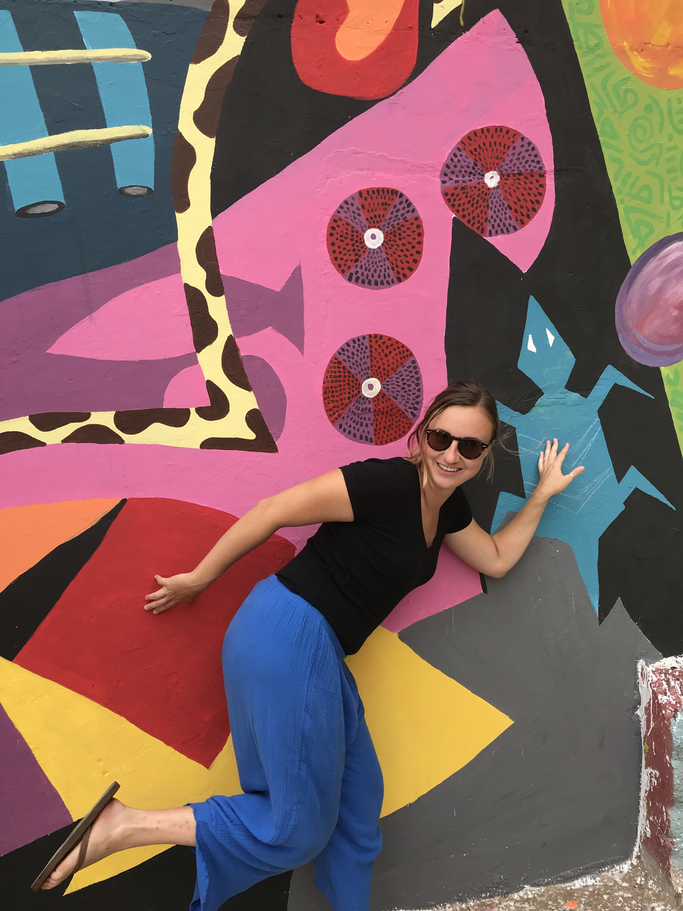

ABOUT ME

Hello, my name is Bianca (she/her)! I'm a human geographer, artist, hiker, cyclist, Croatian-American, Los Angeles native, and cat-lover.
In my work and research, I am interested in developing a deeper understanding of the difficulties that vulnerable and under-resourced communities face. I do this by conducting interviews, participant observation, and other methods in qualitative research. Understanding precarity, which is defined as the “politically induced condition in which certain populations suffer from failing social and economic networks of support and become differentially exposed to injury, violence, and death” (Butler, 2009, p. 2), is foundational to contributing to this knowledge.
I am skilled in both quantitative and qualitative research methods and conducting fieldwork in sub-Saharan Africa. My goal is to contribute to work that aims to make real-world impacts.
Govorim hrvatski jezik, pozdravi me!
Butler, J. 2009. “Performativity, Precarity and Sexual Politics.” AIBR.